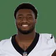

BALL KEEP
Superflex · PPR · Sleeper
Player File · RB WAS

Devin Neal
RB · WAS · 23 · Kansas
2025 season
Counting stats
No 2026 regular-season line yet.
Yards310
Touches74
Catches17
Targets19
TDs2
Snap %37.3%
Rush yds206
Rec yds104
Catch %89.5%
Yds/touch4.2
PPR60.0
Games10
Yearly
| Year | G | Snap % | Touches | Tgt | Rec | Yds | TD | Rush | RuYd | ReYd | PPR |
|---|---|---|---|---|---|---|---|---|---|---|---|
| 2025 | 10 | 37.3% | 74 | 19 | 17 | 310 | 2 | 57 | 206 | 104 | 60.0 |
Regular-season line from Sleeper. Touches are carries plus catches. Yards are rushing plus receiving. Snap % is offensive snaps divided by team offensive snaps.
Keep avg310.4
# Boards10
BK Value397
Spread285-340
The Keep#314BK 397The Board#341BK 312The Classic#339BK 318Best Ball#356BK 274SF Redraft#358BK 269STD#338BK 321
Board graph
Spread 285-340 · 10 sources
Every Board
Spread 285-340 · 10 sources
| Source | Rank |
|---|---|
| Dynasty Nerds | 285 |
| FantasyPros ECR | 292 |
| Sleeper Superflex | 312 |
| DLF ADP mix | 312 |
| PFN (Katz/Soppe) | 313 |
| RotoWire | 313 |
| DLF Superflex | 314 |
| Superflex market mash | 314 |
| Dynasty Trade Calculator | 328 |
| KeepTradeCut SF | 340 |
All player pages · The Keep · The Board · Recent deals · Hot 'n' Cold · BK News · Trade calculator